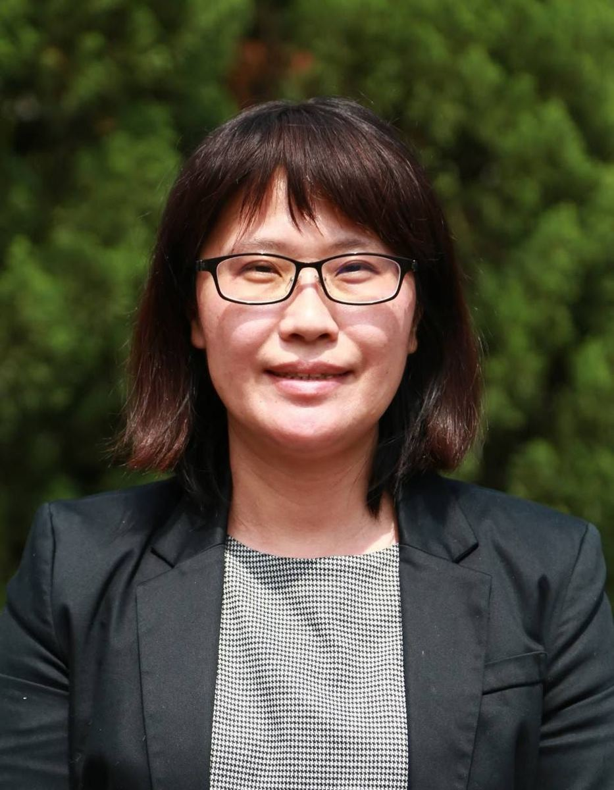

Axis 01
Student-Centred
以學生為中心
Deepen every student's character and academic strength, guiding each child along their own aptitude toward excellence.
深化學生的品格與學力，適性適才邁向優質卓越。
深化學生的品格與學力，適性適才邁向優質卓越。

Welcome to Fusing Junior High School. We sit in the coastal plain of Fushing Township, a small community in central Changhua — and from this rural ground, our students go on to compete on national taekwondo mats, present in English at international classrooms, and build robots that win regional honours.
歡迎來到福興國中。我們紮根於彰化縣福興鄉的沿海平原——從這片鄉土出發，我們的學生走上全國跆拳道擂台、用英文在國際課堂上發表、設計機器人贏得區域競賽榮譽。
Our team has built our work around four interlocking commitments — Technology, Language, Sports, and the Arts & Character — recognised by the Ministry of Education with multiple Voyager and Flagship awards. But beyond the awards, what we care about most is whether each child leaves Fusing with a clearer sense of who they are and what they can do.
本校以「科技、語文、體育、藝術與品格」四大軸線為辦學主軸，獲教育部多項「揚帆學校」與「領航學校」認證。但比起獎項，我們更在意的是：每個孩子離開福興時，是否更清楚自己是誰、自己能做什麼。
Five interlocking commitments anchor every decision we make at Fusing — a working compass that turns vision into daily practice across classrooms, fields, and offices.
以下五大主軸是我辦學的工作羅盤——它們把辦學願景轉化為教室、運動場與行政日常的每一個決定。
The five axes aren't decorative — each one maps directly to a school strength and a recognised certification.
五大主軸並非裝飾性宣言——每一條都直接對應到一項學校的強項與已獲頒的認證。
| Principal's Axis · 校長理念 | Campus Strength · 校務軸線 | Recognition · 認證 |
|---|---|---|
| Curriculum at the Core 以課程作核心 |
Technology · 科技教育 | MOE Technology Education Flagship 2024 |
| Student-Centred 以學生為中心 |
Language & Character · 語文／品格 | Language / Character / Achievement Voyager Schools |
| Team for Cohesion 以團隊創向心 |
Sports Excellence · 體育卓越 | National Taekwondo Champions |
| Collaboration for Quality 以合作展優質 |
International Vision · 國際視野 | Japan & Singapore Partner Schools |
| Safety at the Heart 以安全為重心 |
Friendly Campus · 友善校園 | Daily campus practice |
To the families of Fushing Township and the seven feeder elementary schools — thank you for trusting us with your children. To our students — your three years here will be busy, sometimes hard, often joyful. Stay curious, stay kind, and keep showing up.
致福興鄉的家長與七所學區國小的孩子們——感謝你們把孩子託付給我們。對福興的學生而言，這三年會忙碌、有時辛苦，但常常充滿喜悅。願你們保持好奇、保持善良、持續走下去。
To everyone watching from outside — whether you're a journalist, a partner school, an alumnus, or simply curious — Fusing's doors are open. Come visit us, walk the campus, talk with our students. You'll find a small school doing big things.
而對於從外面關注我們的人——不論你是媒體、合作學校、校友，或只是好奇——福興的大門永遠為你開啟。歡迎走進校園、和我們的學生對話。你會看到一所小學校，正在做很大的事。